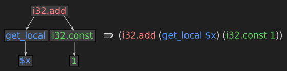
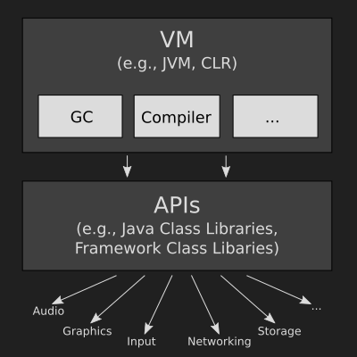
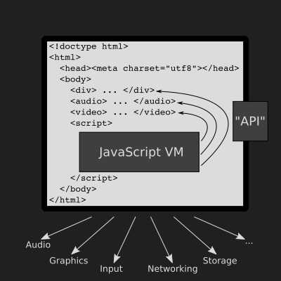
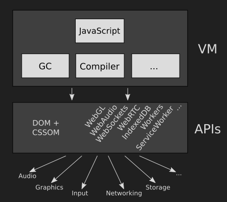
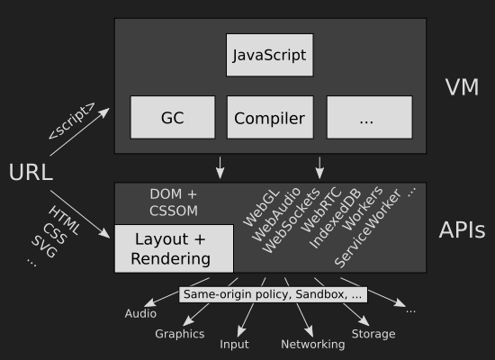
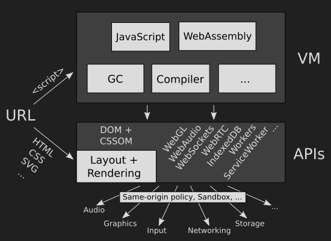

WebAssembly
A New Compiler Target for the Web
people.mozilla.org/~lwagner/philly-ete-2016
Luke Wagner / @luke_wagner
About me
Engineer at Mozilla { JS engine, Research } 6 years
SpiderMonkey (Firefox JavaScript engine) hacker:
Co-chair WebAssembly W3C Community Group
Outline
- What is WebAssembly?
- Why do we need WebAssembly?
- Little tour of WebAssembly
- APIs
- Beyond compiling C/C++
- How will WebAssembly be used?
- Will WebAssembly replace JS? (Spoiler alert: no)
What is WebAssembly?
A new standard being developed in a W3C Community Group with Apple, Google, Microsoft and Mozilla which defines:
- a compact, portable binary format which is fast to load and runs safely at predictably near-native speed
- a 1:1 text format rendered by developer tools when viewing source
So what is WebAssembly really?
It's a couple things, depending on what you're doing:
1. Compiler Target for the Web
Not a programming language
Compile from programming languages
2. JavaScript Feature
Ability to efficiently load large code +
predictable near-native performance =
Powerful library-building tool
3. Virtual CPU
As close to physical machine instructions as safety/portability allow
| WebAssembly | x86 | ARM | |
|---|---|---|---|
i32.add |
↦ | addl |
ADD |
call |
↦ | call |
BL |
i32.load |
↦ | check + mov |
check + LDR |
"check" can safely eliminated on 64-bit, hoistable otherwise
4. Evolution of asm.js
(tl;dr - asm.js is an extraordinarily optimizable, low-level subset of JavaScript that can be compiled from languages like C/C++ and shipped on the Web today)Can think of WebAssembly as a binary encoding of asm.js with tweaks to make it a better compiler target
| asm.js | WebAssembly | |
|---|---|---|
(x+y)|0 |
↦ | i32.add |
f()|0 |
↦ | call |
HEAP32[i>>2]|0 |
↝ | i32.load |
Why WebAssembly?
Why do we need this new target / feature / CPU / asm.js++?
Short History of asm.js
| 2009 - 2012 |
Mozilla Research experiments: Emscripten: C/C++ to JS compiler/toolchain asm.js: optimize Emscripten-style output |
| 2013 - 2014 | Published asm.js subset, shipped optimizations in Firefox, demonstrated on large game engines |
| 2015 - 2016 |
asm.js optimizations shipping or under development in Edge, Chrome and Safari Adobe, AutoDesk, Epic, Facebook, Mega, Unity, and more shipping with Emscripten/asm.js |
Why WebAssembly?
asm.js use today demonstrates real demand and excitement
asm.js use cases:
- avoid plugins (deprecation, friction, security)
- bring existing applications to the Web (too big to rewrite)
- port high-performance C/C++ libraries for use by JS
- predictable near-native performance (compared to JS)
But Why WebAssembly?
Because we need to go farther than we can with asm.js.
Based on feedback from developers, we need to:
- further reduce load time (especially on mobile)
- reduce over-the-wire size (with and without compression)
- reduce runtime memory consumption for code
- new features that don't fit neatly into asm.js
- keep pushing closer to native code performance
(Also shared memory, but that's coming in JS too.)
Why WebAssembly?
tl;dr
And I want it on the Web!

WebAssembly is a Work In Progress
Recently reached Firefox/Chrome/Edge interop milestone!
More iteration before stable spec and ship in browsers
Want to ship this year (with usual standardization caveats)
WebAssembly is being specified and shipped iteratively.
The initial release focuses on a Minimum Viable Product: compiling C/C++, better asm.js.
(This means we can use asm.js to write polyfills!)
But there is a lot more we want to do next!
The whole text format is under construction, so I'll use the current temporary S-Expression syntax in this presentation:

Other things that are speculative or NYI are marked ☃
Let's take a little tour!
Start with some C code:
// demo.c
DLL_EXPORT
int add(int lhs, int rhs) {
return lhs + rhs;
}
// However DLL/DSO exports are defined in your compiler
#define DLL_EXPORT __attribute__ ((visibility ("default")))
then compile to wasm:
☃ clang -mwasm demo.c -o demo.wasm
Render the binary as text:
☃ wasm2text demo.wasm | less
(module
(func $add (param $lhs i32) (param $rhs i32) (result i32)
(i32.add (get_local $lhs) (get_local $rhs))
)
(export "add" $add)
)
Today, we load the wasm via JS API:
fetch('demo.wasm').then(response =>
response.arrayBuffer()
).then(buffer => {
let codeBytes = new Uint8Array(buffer);
let instance = Wasm.instantiateModule(codeBytes);
alert("1 + 2 = " + instance.exports.add(1, 2));
});
Demo!
Experimental support requires Firefox Nightly and setting javascript.options.wasm in about:config
- Open the Debugger
- Click the
wasmsource
☃ In the future, streaming, async compilation via Streams
fetch('demo.wasm').then(response =>
Wasm.compile(response.body.getReader())
).then(instance => {
alert("1 + 2 = " + instance.exports.add(1, 2));
});
☃ In the future, with ES6 Module integration:
WebAssembly can call JavaScript too!
// main.c
extern DLL_IMPORT void printInt(int);
int main() {
printInt(42);
}
wasm are imported:
// However DLL/DSO imports are defined in your compiler
#define DLL_IMPORT __attribute__ ((visibility ("default")))
then compile to wasm:
☃ clang -mwasm main.c -o main.wasm
Rendering the binary as text:
☃ wasm2text main.wasm | less
(module
(import "imports" "printInt" (param i32))
(func $main (call_import 0 (i32.const 42)))
(start $main)
)
Now write the ES6 module which is called by wasm:
// imports.js
export var printInt = i => console.log(i);
☃ and load the wasm from a <script type='module'> tag:
Imports can also just be functions passed to the JS API:
var codeBytes = ...;
var imports = {printInt:i => console.log(i)};
Wasm.instantiateModule(codeBytes, {imports});
Now let's look at an actual computation:
// accum.c
DLL_EXPORT
int accum(int* i, int* end) {
int sum = 0;
for (; i != end; i++)
sum += *i;
return sum;
}
This compiles to the function:
(func $accum (param $i i32) (param $end i32) (result i32)
(local $sum i32)
(loop $break $top
(br_if $break (i32.eq (get_local $i) (get_local $end)))
(set_local $sum (i32.add (get_local $sum)
(i32.load (get_local $i))))
(set_local $i (i32.add (get_local $i) (i32.const 4)))
(br $top)
)
(get_local $sum)
) \o/
The containg module declares and exports memory
(module
(memory 1) ;; declare one page of memory = 64KiB
(export "memory" memory)
(func $accum ...)
(export "accum" $accum)
)
Which we can then access from JS:
var codeBytes = ...;
var instance = Wasm.instantiateModule(codeBytes);
// Create an array of integers 1..10
var i32 = new Int32Array(instance.exports.memory);
for (var i = 0; i < 10; i++)
i32[i] = i + 1;
console.log(instance.exports.accum(0, 10 * 4)); // "55"
End of the Tour
What we've seen so far:
- Calling to and from JavaScript
- ES6 module integration ☃
- Computation
But what about APIs?
On a traditional virtual platform:

My impression when I started working on Firefox:

(Only a decade or two out of date :)
But the Web has changed a lot since then
and is starting to resemble a traditional virtual platform
... with some special "Webby" properties like:

... open standards, multiple implementations, etc
Q: So what are WebAssembly APIs? A: Web APIs!
This is a key difference from plugin architectures
Web API integration
Today, WebAssembly only gets to Web APIs by "thunking" through JavaScript
(That's what the WebAssembly demo is doing)
☃ In the future, support calling Web APIs directly
Web API integration
Emscripten maps common C/C++ interfaces to Web APIs
For example, using libc and SDL:
#include <SDL/SDL.h>
#include <stdio.h>
int main(int argc, char **argv) {
SDL_Init(SDL_INIT_VIDEO);
SDL_Surface *s = SDL_SetVideoMode(200, 200, 32, SDL_HWSURFACE);
SDL_Rect rect = { 50, 50, 100, 100 };
SDL_FillRect(s, &rect, 0xffff0000);
printf("Done!\n");
return 0;
}
Compiled by Emscripten with:
emcc -O2 test.c -o test.html
Web API integration
Which produces a default HTML harness:
Beyond compiling C/C++
Currently, WebAssembly only has linear memory
Great if your language has a low-level memory model
But if your language has GC:
- would need to implement/ship your own GC
- which misses optimizations in browser GC
- cannot collect cycles involving browser objects
Beyond compiling C/C++
To provide first-class support for GC languages, WebAssembly needs direct GC access
☃ Goal: add low-level GC primitives to avoid baking in one language's class model
☃ Goal: share GC heap with JS, allow objects/strings/values to flow back and forth
Beyond compiling C/C++
Also need some fundamental extensions to the (shared JS + WebAssembly) GC:
- Typed Objects
- Postmortem Notification
- Weak References
Beyond compiling C/C++
Need even more features in WebAssembly to run dynamic languages efficiently:
- Patching: immediates, branch targets, return address, ...
- Fine-grained (stub) compilation
- Good dynamic/any value support
So "compiling JS to WebAssembly": not going to make anything faster any time soon
Beyond compiling C/C++
Also need a good source-maps story
- debug/profile in source language
- avoid size problems of today's source maps
- avoid specifying "WebDWARF"
How will WebAssembly be Used?
Hard to predict, but we can extrapolate from asm.js today:
- Implicitly through JS frameworks
- E.g., in Yehuda Katz's Ember talk yesterday
- Explicitly through individual WebAssembly libraries
- E.g., ammo.js, sql.js, asmCrypto.js, cld, BA3, ...
- Whole WebAssembly engine + JS frontend
- E.g., MathStudio, Adobe Lightroom, ...
- WebAssembly driving a big canvas with JS chrome
- E.g., AutoDesk FormIt, Unity games in Facebook, ...
- WebAssembly driving one-big-canvas ports
Bespoke canvas reimplementations of HTML/CSS
Will WebAssembly Replace JS?
No. Why?
- JS remains the privileged high-level language of the Web
- JS has huge and growing momentum, vibrant ecosystem
In fact, WebAssembly may have quite the opposite effect:
If you're going to target WebAssembly and your app needs a scripting language, JS is a natural choice...
Conclusion
- Binary and text format
- Low-level compiler target
- Many ways and reasons to use
- Part of the Web platform, sibling to JavaScript
- Support more languages in the future
Thanks! Questions?
find out more at webassembly.github.io
experiment using Binaryen